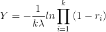

Los métodos convolutivos son métodos que permiten la simulación de una variable aleatoria principal, Y, a través de la suma de otras variables aleatorias X de manera más rápida que a través de otros métodos.
La variable aleatoria k-Erlang con media 1/λ puede producirse a partir de la generaciónde k variables exponenciales con media 1/kλ:
En específico, la distribución de Erlang es útil para simular el estimado del tiempo de proceso de piezas. Basta con conocer el tiempo promedio y definir el número k de variables aleatorias.